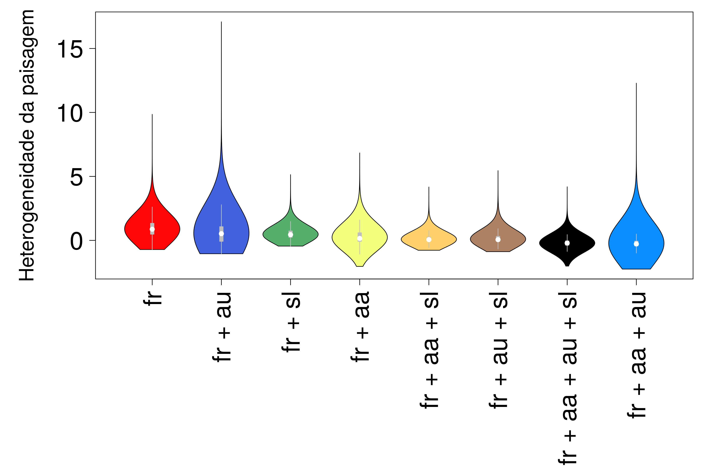
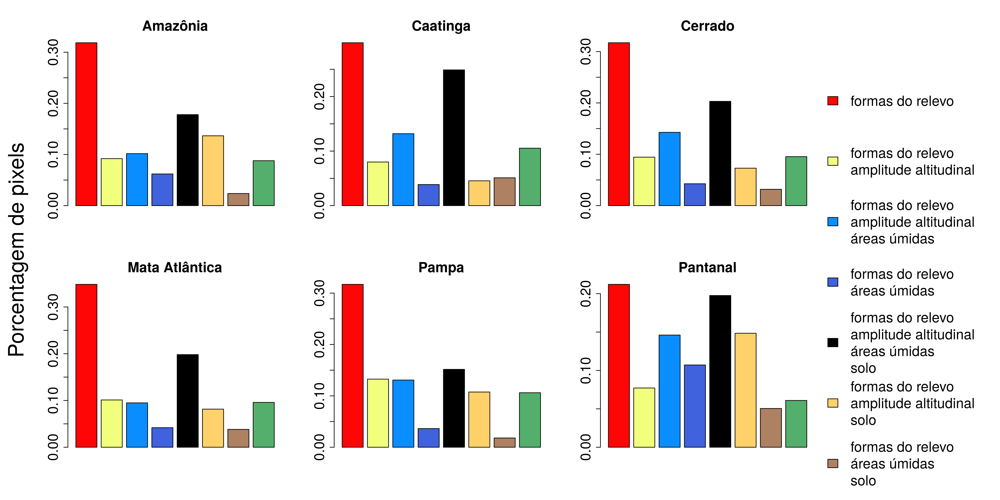

Resultados preliminares
Os mapas das camadas principais e das variáveis intermediárias da análise podem ser visualizados no seguinte link: https://projeto-resiliencia-tnc.hub.arcgis.com/?share=link.
Atenção: o projeto ainda está em andamento, então os resultados apresentados são ainda versões preliminares do estudo.
Abaixo são descritos resultados principais por bioma e alguns padrões gerais obtidos para cada uma das camadas.
Heterogeneidade da paisagem (link)
As áreas de alta heterogeneidade da paisagem estão distribuídas por todo o Brasil (Figura 1). As regiões de destaque são aquelas próximas aos rios, em localidades com alta rugosidade do relevo, mudanças abruptas de declividade, alta densidade de áreas úmidas e riqueza de solos. As classes sobrepõem a distribuição da heterogeneidade da paisagem e possuem medianas semelhantes (Figura 2). As diferenças são principalmente nas variâncias das classes. Desta forma, as maiores heterogeneidades estão associadas à variedade de formas de relevo e índice de áreas úmidas (Figura 2). A presença de todas as variáveis no cálculo da heterogeneidade mostra que todas foram importantes dependendo das características locais (Figura 3 A). A variedade de formas de relevo foi a principal variável na atribuição da heterogeneidade da paisagem, seguida pela média de todas as variáveis (Figura 3 B). O índice de áreas úmidas e riqueza de solos também foram importantes nos locais onde a variedade de formas de relevo e a amplitude altitudinal não apresentaram altos valores (Figura 3 B).



No nível dos biomas, a variedade de formas do relevo e a média de todas as variáveis também foram as mais importantes (Figura 4). No entanto, a média de formas de relevo, amplitude altitudinal e riqueza de solo foi mais importantes na Amazônia e Pantanal. A amplitude altitudinal e formas de relevo foram mais importantes na Mata Atlântica e Pampa. As formas do relevo, amplitude altitudinal e índice de áreas úmidas tiveram mais importância na Caatinga e Cerrado. Entretanto, o índice de áreas úmidas foi mais representativo no Pantanal, quando combinadas as frequências das áreas que tiveram o índice áreas úmidas como parte do cálculo da média (Figura 4). Na Amazônia destaca-se …. (Figura 6). Na Caatinga é possível identificar alta heterogeneidade da paisagem na Chapada do Araripe, … (Figura 7). No Cerrado, observa-se alta heterogeneidade nas transições dos platôs das Chapadas para as áreas baixas (ex. Chapada dos Veadeiros, Chapadas do Rio São Franscisco), localidades com alta rugosidade do relevo (ex. Serra da Canastra) e variação de altitude (ex. Patamares Ocidentais da Bacia do Paraná). Nas áreas de relevo mais planas, destacam-se os rios Araguaia e das Mortes como as áreas de alta heterogeneidade (Figura 8). Na Mata Atlântica …. (Figura 9). No Pantanal, as localidades com maiores heterogeneidade da paisagem são rios, lagoas e regiões mais altas, contrastantes com o entorno plano. Dentre os corpos hídricos que se destacam na heterogeneidade da paisagem estão principalmente os rios Piquiri, São Lourenço e Taquari, além de algumas lagoas da Nhecolândia, provavelmente devido ao contraste da variação de relevo com o entorno, visto que pequenas declividades em um ambiente muito plano são relevantes na heterogeneidade da paisagem (Figura 11). Dentre regiões altas inseridas no Pantanal, destacamos a paisagem da Serra do Amolar (borda oeste do Pantanal), … No Pampa, … (Figura 10).

Conectividade Local(link)

A conectividade local no bioma amazônico tende a ser alta, as áreas de baixa conectividade estão situadas principalmente no “Arco do Desmatamento”, nas regiões do Sul e Leste do bioma, e ao longo dos maiores rios da região (Figura 6 FIGURA para Amazonia esta com o valor invertido para conectividade).

Na Caatinga, a conectividade local é alta principalmente na porção ocidental do bioma, enquanto a porção leste compreende a regiões de maior contraste entre os usos e cobertura do solo, o que diminui o grau de conectividade local nessa região em direção ao litoral. As áreas menos conectadas correspondem aos grandes centros urbanos como Fortaleza. O Rio São Francisco aparece também como uma importante barreira geográfica no bioma, devido a sua extensa largura em alguns trechos no centro da Caatinga (Figura 7).

No Cerrado, as regiões Norte, Leste e Oeste possuem altos valores de conectividade. Na porção central e sul do bioma concentram-se as áreas com baixa conectividade, sendo as menos conectadas aquelas próximas ao grandes centros urbanos como Goiânia, Campo Grande e Brasília. Na Chapada do Rio São Franscisco, na Bahia, há também baixa conectividade nas áreas de agricultura. Por outro lado, a maior parte da região menos conectada possui áreas de alta e média conectividade dentro delas (Figura 8).

Na Mata Atlântica, a conectividade local é amplamente distribuída , porém espacialmente estruturado. Regiões de alta conectividade local concentram-se ao sul do bioma com diminuição da conectividade em direção ao limite norte, onde então um padrão bifurcado de áreas de alta conectividade emerge novamente, porém interposto por áreas de conectividade moderada (Figura 9 A). As áreas de menor conectividade, principalmente localizadas na maior extensão longitudinal do bioma, correspondem a grandes ocupações urbanas nos estados de São Paulo e Rio de Janeiro, áreas de maior densidade populacional do Brasil (Figura 7 B).

No Pantanal, a conectividade local é alta exceto pelo avanço da agricultura na borda leste do bioma

No Pampa….
Resiliência da paisagem (link)


A Resiliência da Paisagem na Amazônia (Figura 6 C) é influenciada de forma distinta pelas camadas de heterogeneidade da paisagem e conectividade local. A camada de conectividade local tem influência em larga escala (Figura 6 B) e a camada de heterogeneidade da paisagem em pequena escala (Figura 6 A). Essa diferença nas escalas de influência das camadas na resiliência da paisagem, ocorre por conta da diferença na concentração de valores, sendo que a camada de conectividade local apresenta grandes extensões de terra com altos valores de conectividade local. A classificação da camada de resiliência se apresenta concentrada na região Oeste da Amazônia (estado do Acre), na região Norte do Estado do Amazonas.
Na Caatinga encontramos que áreas resilientes são as menos expressivas do gradiente de resiliência obtido para esse bioma. Apenas 19.88% dos pixels da Caatinga correspondem às áreas altamente resilientes (Figura 14 C), isto é, regiões com alta conectividade local e alta heterogeneidade da paisagem Figura 14 C, quadrante 4). Áreas de baixa resiliência, isto é, áreas onde tanto a conectividade local como a heterogeneidade da paisagem são baixas correspondem 33.90% do bioma (Figura 14 C, quadrante 1). Áreas de resiliência moderadas descritas nos pelos valores dos quadrantes 2 (baixa conectividade e alta heterogeneidade da paisagem) e 3 (alta conectividade e baixa heterogeneidade; Figura 14 C) compreendem aos outros 26.77% e 19.44% dos pixels restantes, respectivamente (Figura 14 C, quadrante 3). Portanto, nossos resultados indicam que tanto a conectividade quanto a heterogeneidade da paisagem são fundamentais no padrão espacial da resiliência climática encontrado para o bioma Caatinga. Além disso, a maior parte do bioma é dominado por áreas altamente conectadas, tendendo a concentrarem-se mais ao Oeste do bioma, porém com heterogeneidade da paisagem de baixa a moderada, conferindo um padrão de resiliência climática de baixa a moderada para esse bioma (Figura 14 C).
No Cerrado, as áreas com maior resiliência ocupam 18.07 % do bioma (Figura 14 D, quadrante 4), concentradas nas regiões Norte, Leste e Oeste (Figura 8). As áreas de alta heterogeneidade e baixa conectividade ocupam 30,95% (Figura 14 D, quadrante 2), tendo alto potencial para tornarem se resilientes se aumentarem a conectividade local. As áreas de baixa conectividade e heterogeneidade ocupam 35,59% do bioma (Figura 14 D, quadrante 1). Há ainda uma grande distribuição de áreas resilientes permeando as áreas de baixa resiliência na parte central e sul do bioma (Figura 8). Além disso, 15.39 % das localidades do bioma são áreas com alta conectividade e baixa heterogeneidade (Figura 14 D, quadrante 3). Apesar dessas localidades não possuírem alta resiliência, elas podem servir como uma rede de corredores que conectam as áreas resilientes.
Na Mata Atlântica encontramos que apenas 5.09% dos pixels correspondem às áreas de maior resiliência a mudanças climáticas, ou seja, áreas com alta heterogeneidade da paisagem e alta conectividade local (Figura 14 E, quadrante 4). Por outro lado, 41.97% do território do bioma corresponde a áreas identificadas como áreas de baixa resiliência as mudanças do clima (Figura 14 E, quadrante 1) evidenciando o predomínio de áreas com baixa conectividade em áreas de baixa heterogeneidade da paisagem e, por isso, é o padrão predominante em escalas regionais. Apenas 3.57% corresponde a áreas com alta conectividade local e baixa heterogeneidade da paisagem (Figura 14 E, quadrante 3) enquanto os outros 49.37% dos pixels foram identificados como área de baixa conectividade local, porém com alta heterogeneidade da paisagem (Figura 14 E, quadrante 4). Portanto, nossos resultados mostram que a conectividade da paisagem é um fator determinante no padrão de resiliência atualmente encontrado para a Mata Atlântica. Áreas de maior resiliência concentram-se na porção sul e sudeste do bioma (Figura 9 C), porém podem estar concentradas em áreas de elevação moderada a alta já que em áreas mais baixas dessa mesma região encontram-se as maiores metrópoles brasileiras (Figura 8B).
No Pantanal, as regiões de maior resiliência da paisagem são majoritariamente nas regiões mais conectadas, sendo mais baixas somente nas regiões mais antropizadas. Essa dominância da conectividade local na resiliência da paisagem se dá pela estacionariedade dos valores de heterogeneidade da paisagem na maior parte da região. Há algumas exceções de valores mais altos de heterogeneidade da paisagem como: alguns rios, lagoas e regiões mais altas, contrastantes com o entorno plano.
No Pampa …